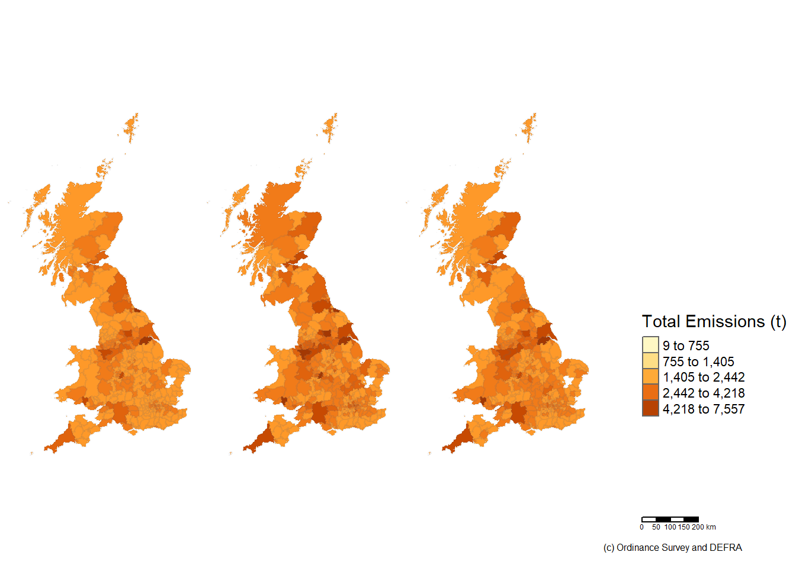
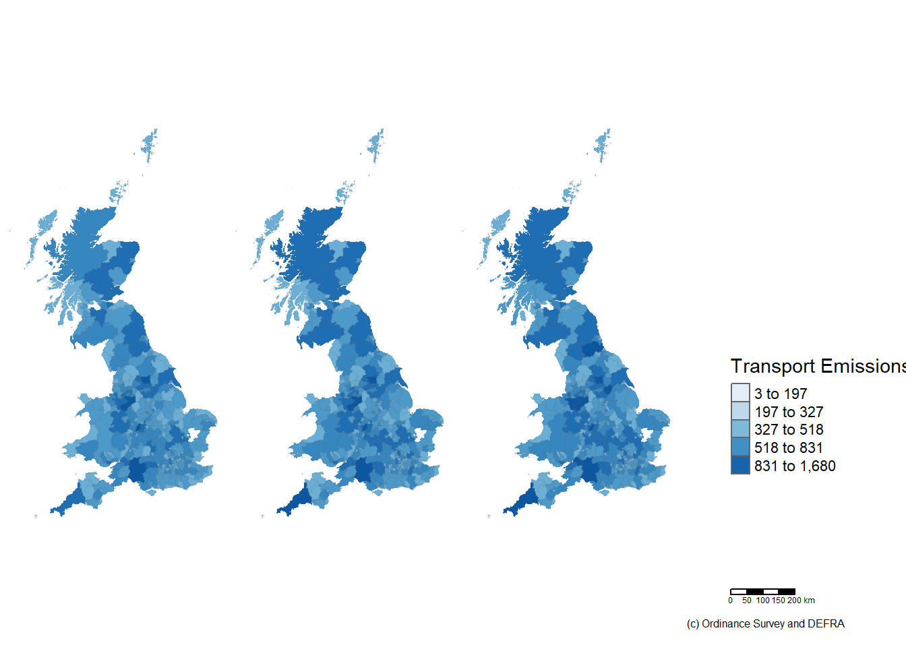
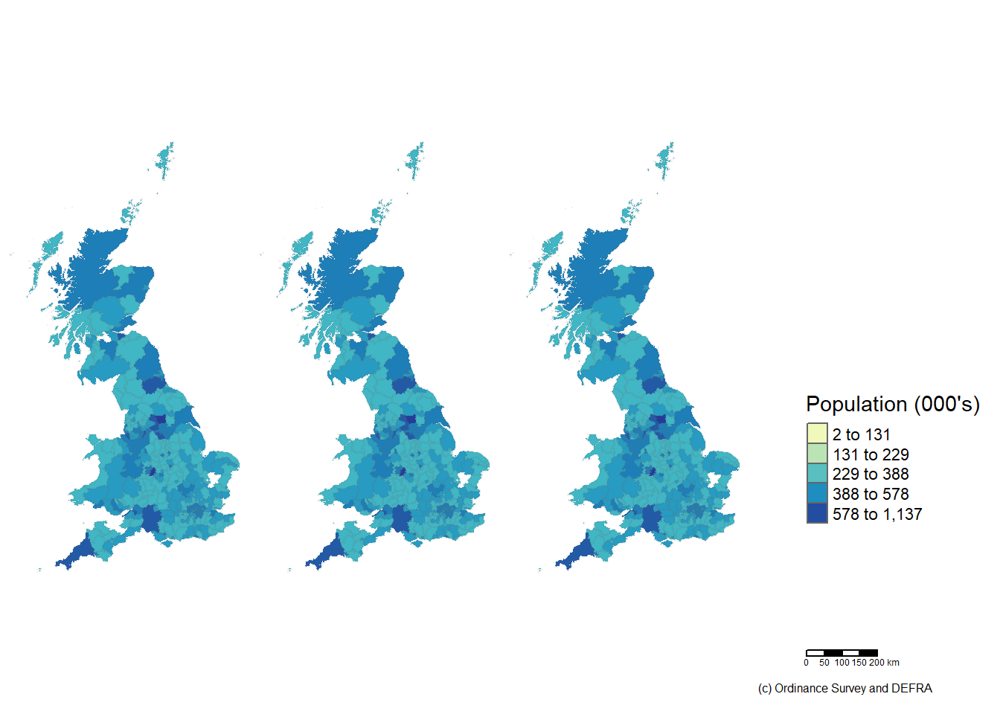
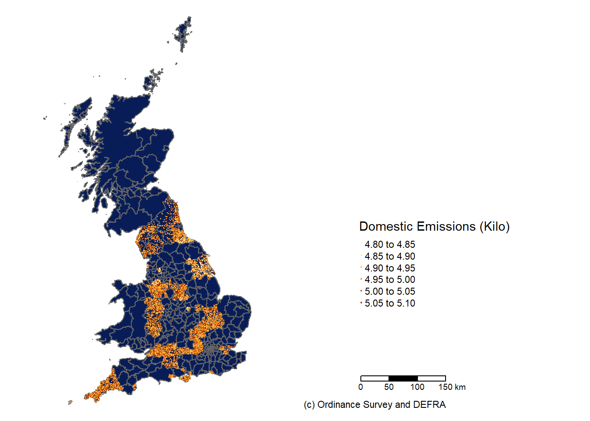
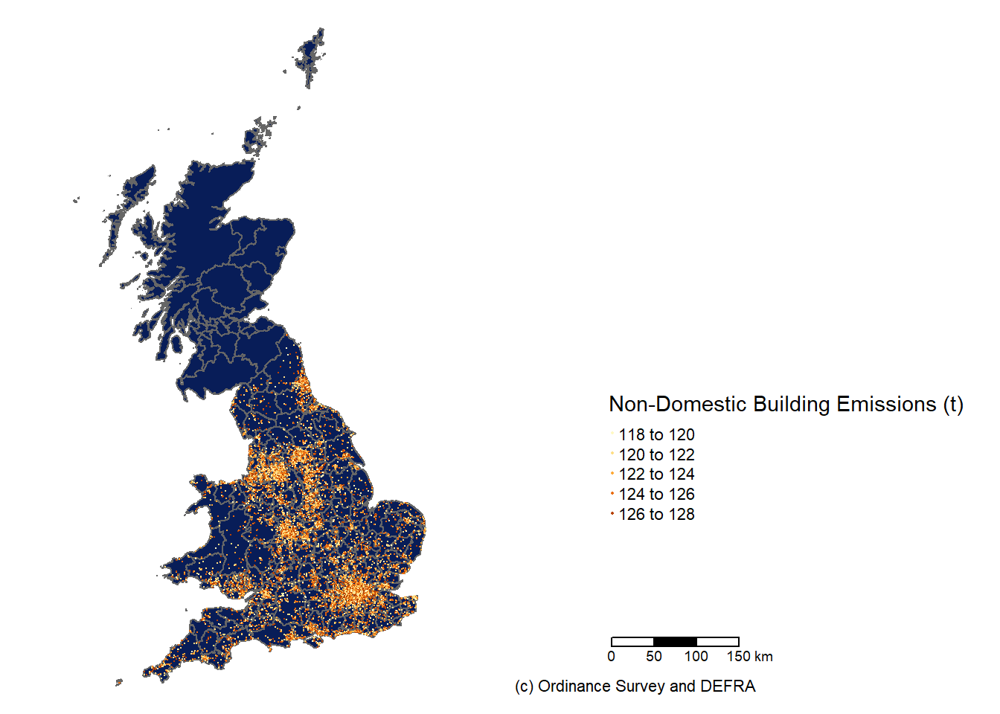
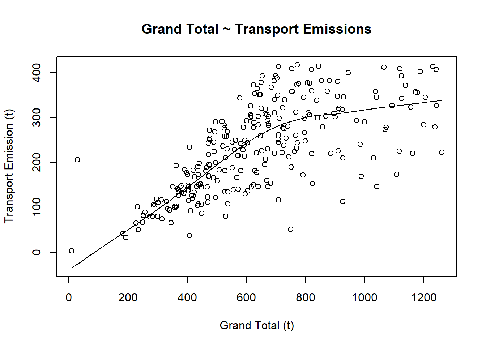
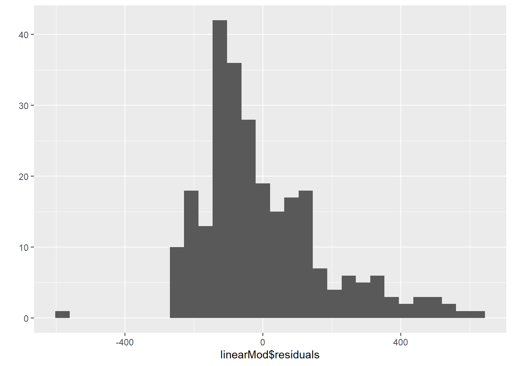

Global warming and Climate Change is causing catastrophic and devastating effect on the planet earth.The impact of global warming is wide ranging and few of those are increase in temperature along tropical regions, increase in humidity, melt down of artic glaciers, affects the Marine ecosystem like ocean acidification and depletion of coral reefs, increase in sea level, harsh seasons, affects the vulnerable people, increase poverty and malnutrition, increase in heat related morbidity and mortalities, decrease in agricultural yields and nutritional quality of crops, affect the livestock, increase water stress and decline economic growth.
The data used for this analysis was confined to values with IQR for each variable. The whole of Domestic and Non Domestic building EPC data couldn’t be used for this study, instead only the top 5 percent of the IQR values were used. Scatter plots were used to visualise the trend’s and the residual plots were used to visualise the variation of data from the mean.The Correlations analysis showed all the variables in scope of this research had very weak correlation coefficient with the total emissions.The Bivariate models had very low R squared values making it a not so good fit model. The Multi linear regression on the total emissions and emissionsfrom transport and domestic building proved to be a good fitting model with very low p value and R squared value close to 1.
The R code developed for the visualisation and analysis of this topic is provided below
Data and Shape files location (google drive) https://drive.google.com/drive/folders/16y-bm3wLjN4ChO5D3lzILaBkQCHKe7Og?usp=sharing
library(crs)
library(sf)
library(tmap)
library(tmaptools)
library(plyr)
library(tidyverse)
library(rmapshaper)
library(rgdal)
library(dplyr)
library(numbers)
library(maptools)
library(caret)Read the EPC data sets for Domestic and Non-Domestic buildings.
Read the extracted data and combine them for visualisation purpose.
#Read the Local authority emissions data file
UKCO2.df <- read_csv("./Data/2005-17_UK_local_and_regional_CO2_emissions_tables (version 1).csv")## Parsed with column specification:
## cols(
## .default = col_number(),
## `Region Name` = col_character(),
## `Second Tier Authority` = col_character(),
## LAD14NM = col_character(),
## LAD14CD = col_character(),
## Year = col_double(),
## `C. Large Industrial Installations` = col_character(),
## `E. Agriculture` = col_double(),
## `H. Domestic 'Other Fuels'` = col_double(),
## `J. Road Transport (Motorways)` = col_character(),
## `L. Diesel Railways` = col_character(),
## `M. Transport Other` = col_double(),
## `Per Capita Emissions (t)` = col_double()
## )## See spec(...) for full column specifications.## Warning: 625 parsing failures.
## row col expected actual file
## 2757 H. Domestic 'Other Fuels' no trailing characters ,191.8 './Data/2005-17_UK_local_and_regional_CO2_emissions_tables (version 1).csv'
## 2758 H. Domestic 'Other Fuels' no trailing characters ,217.7 './Data/2005-17_UK_local_and_regional_CO2_emissions_tables (version 1).csv'
## 2759 H. Domestic 'Other Fuels' no trailing characters ,104.8 './Data/2005-17_UK_local_and_regional_CO2_emissions_tables (version 1).csv'
## 2760 H. Domestic 'Other Fuels' no trailing characters ,167.8 './Data/2005-17_UK_local_and_regional_CO2_emissions_tables (version 1).csv'
## 2761 H. Domestic 'Other Fuels' no trailing characters ,114.8 './Data/2005-17_UK_local_and_regional_CO2_emissions_tables (version 1).csv'
## .... ......................... ...................... ...... ...........................................................................
## See problems(...) for more details.#summary(UKCO2.df)
#names(UKCO2.df)
# Read the Shapefile
OSME <- st_read("./Shapefile/DistrictBoroughUnitaryEngWalScot.shp")## Reading layer `DistrictBoroughUnitaryEngWalScot' from data source `C:\CASA_SDAV\GIS_CASA0005\FinalCoursework\SpatialAnalysisofCarbonFootprint\Shapefile\DistrictBoroughUnitaryEngWalScot.shp' using driver `ESRI Shapefile'
## Simple feature collection with 371 features and 16 fields
## geometry type: MULTIPOLYGON
## dimension: XY
## bbox: xmin: 5512.998 ymin: 5333.603 xmax: 655989 ymax: 1220302
## epsg (SRID): NA
## proj4string: +proj=tmerc +lat_0=49 +lon_0=-2 +k=0.9996012717 +x_0=400000 +y_0=-100000 +datum=OSGB36 +units=m +no_defsOSME <- st_transform(OSME,crs=27700)
OSME <- ms_simplify(OSME,0.05)
#OSME
nondomestic.epc <- read.csv("./Data/all-non-domestic-certificates/combinedcertificates.csv")
nondomestic.epc <- nondomestic.epc[,c("LOCAL_AUTHORITY","POSTCODE","BUILDING_EMISSIONS")]
nondomestic.epc <- nondomestic.epc %>% filter(!is.na(LOCAL_AUTHORITY)) %>% filter(!is.na(BUILDING_EMISSIONS)) %>%
filter(BUILDING_EMISSIONS < 128)
nondomestic.epc <- nondomestic.epc[order(-nondomestic.epc$BUILDING_EMISSIONS),]
#summary(nondomestic.epc$BUILDING_EMISSIONS)
domestic.epc <- read.csv("./Data/all-domestic-certificates/combinedcertificates.csv")
domestic.epc <- domestic.epc %>% filter(!is.na(LOCAL_AUTHORITY)) %>% filter(!is.na(CO2_EMISSIONS_CURRENT))%>%
filter(CO2_EMISSIONS_CURRENT<=5.10)
domestic.epc <- domestic.epc[order(-domestic.epc$CO2_EMISSIONS_CURRENT),]
#domestic.epc
#summary(domestic.epc$CO2_EMISSIONS_CURRENT)
dlen = round(nrow(domestic.epc)*(5/100))
nlen = round(nrow(nondomestic.epc)*(5/100))
domestic.epct <- domestic.epc[1:dlen,]
nondomestic.epct <- nondomestic.epc[1:nlen,]
pclatlon <- data.frame(read.csv("./Data/ukpostcodes/ukpostcodes.csv"))
names(pclatlon) <- c("ID","POSTCODE","LATITUDE","LONGITUDE")
#head(pclatlon)
nondmc.df <- merge(nondomestic.epct,pclatlon,by="POSTCODE")
dmc.df <- merge (domestic.epct,pclatlon,by="POSTCODE")
ndmc.epc <- st_as_sf(nondmc.df, coords = c("LONGITUDE","LATITUDE"), crs = 4326)
#summary(ndmc.epc$BUILDING_EMISSIONS)
dmc.epc <- st_as_sf(dmc.df, coords = c("LONGITUDE","LATITUDE"), crs = 4326)
#summary(dmc.epc$CO2_EMISSIONS_CURRENT)R function to generate the time series map.
OSMEJ.df <- merge(OSME,UKCO2.df,by.x="Census_Cod",by.y="LAD14CD",all.x = TRUE)
#left_join(OSME,UKCO2.df,by =c("Census_Cod"="LAD14CD"))
#summarise(OSMEJ.df)
colnames(OSMEJ.df)[39] <- "Population (000'S)"
dispmap3 <-function(shpobj,fieldname,titlevalue,colcode){
tm1 <- tm_shape(shpobj %>% filter(Year==c(2006) )) +
tm_polygons(fieldname,
style="jenks",
palette=colcode,
midpoint=FALSE,
border.alpha=0.1)+
tm_legend(show=FALSE)+
tm_layout(frame=FALSE)
tm2 <- tm_shape( shpobj %>% filter(Year==c(2012) )) +
tm_polygons(fieldname,
#style=c("jenks", "pretty"),
#palette=list("YlOrBr", "Purples"),
style="jenks",
palette=colcode,
midpoint=FALSE,
border.alpha=0.1)+
tm_legend(show=FALSE)+
tm_layout(frame=FALSE)
tm3 <- tm_shape( shpobj %>% filter(Year==c(2017) )) +
tm_polygons(fieldname,
style="jenks",
palette=colcode,
midpoint=FALSE,
border.alpha=0.1)+
tm_legend(show=FALSE)+
tm_layout(frame=FALSE)
legend <- tm_shape(shpobj %>% filter(Year==c(2017))) +
tm_polygons(fieldname,title=titlevalue,
style="jenks",
palette=colcode) +
tm_scale_bar(position=c(0.2,0.04), text.size=0.6)+
tm_layout(legend.only = TRUE, legend.position=c(0.2,0.25),asp=0.1)+
tm_credits("(c) Ordinance Survey and DEFRA", position=c(0.0,0.0))
tmap_mode("plot")
t=tmap_arrange(tm1,tm2,tm3,legend,ncol=4)
t
}Display Time series maps for Total emissions, Transport Total,
dispmap3(OSMEJ.df,"Grand Total","Total Emissions (t)","YlOrBr")## tmap mode set to plotting
dispmap3(OSMEJ.df,"Transport Total","Transport Emissions","Blues")## tmap mode set to plotting
dispmap3(OSMEJ.df,"Population (000'S)","Population (000's)","YlGnBu")## tmap mode set to plotting
Plot Domestic and Non Domestic Building data using a function. function to plot the epc map.
plotEpcData <- function(mapspdf,epcspdf,fieldname,maptext){
tm2 <- tm_shape(mapspdf) +
tm_fill("#081d58")+
tm_polygons()+
tm_legend(show=FALSE)+
tm_layout(frame=FALSE) +
tm_shape(epcspdf)+
tm_dots(fieldname,palette="YlOrBr",size=0.0001)
legend1 <-
tm_shape(epcspdf)+ tm_dots(fieldname,title=maptext,
palette="YlOrBr") +
tm_scale_bar(position=c(0.2,0.04), text.size=0.6)+
tm_layout(legend.only = TRUE, legend.position=c(0.2,0.25),asp=0.1)+
tm_credits("(c) Ordinance Survey and DEFRA", position=c(0.0,0.0))
tmap_mode("plot")
t=tmap_arrange(tm2,legend1,ncol=2)
t
}Plot the EPC Maps for Domestic and Non Domestic data.
plotEpcData(OSME,dmc.epc,"CO2_EMISSIONS_CURRENT","Domestic Emissions (Kilo)")## tmap mode set to plotting## Warning: One tm layer group has duplicated layer types, which are omitted. To
## draw multiple layers of the same type, use multiple layer groups (i.e. specify
## tm_shape prior to each of them).
plotEpcData(OSME,ndmc.epc,"BUILDING_EMISSIONS","Non-Domestic Building Emissions (t)") ## tmap mode set to plotting## Warning: One tm layer group has duplicated layer types, which are omitted. To
## draw multiple layers of the same type, use multiple layer groups (i.e. specify
## tm_shape prior to each of them).
Aggregate all the values in the data frames at a local authority level. Combine all spatial dataframes.
cdmc.epc <- dmc.epc %>% group_by(LOCAL_AUTHORITY)%>%
summarise(CO2_EMISSIONS_CURRENT = sum(CO2_EMISSIONS_CURRENT))%>%
select(LOCAL_AUTHORITY,CO2_EMISSIONS_CURRENT)
cndmc.epc <- ndmc.epc %>% group_by(LOCAL_AUTHORITY)%>%
summarise(BUILDING_EMISSIONS = sum(BUILDING_EMISSIONS))%>%
select(LOCAL_AUTHORITY,BUILDING_EMISSIONS)
cdmc.epc <- st_transform(cdmc.epc,crs=27700)
cndmc.epc <- st_transform(cndmc.epc,crs=27700)
COSMEJ.df <- st_join(st_join(OSMEJ.df,cdmc.epc,join=st_covers),
cndmc.epc,join=st_covers )Code to calcualte the pearson coefficient and do a scatterplot. Code to generate Pearson coeffiicient and scatterplot for Total Emission vs Transport Emissions.
summary(OSMEJ.df$`Grand Total`)## Min. 1st Qu. Median Mean 3rd Qu. Max. NA's
## 9.1 641.9 895.9 1141.7 1296.5 11313.2 7summary(OSMEJ.df$`Transport Total`)## Min. 1st Qu. Median Mean 3rd Qu. Max. NA's
## 2.4 179.9 291.4 330.1 416.9 1830.3 7val <- OSMEJ.df %>% filter(Year == 2017)%>%filter(`Grand Total` <= 1296) %>%
filter(Year == 2017)%>%filter(`Transport Total` <= 417)
scatter.smooth(x= val$`Grand Total`,
y= val$`Transport Total`,
main="Grand Total ~ Transport Emissions",
xlab="Grand Total (t)",
ylab="Transport Emission (t)") 
stat_sig=cor.test(val$`Grand Total`,
val$`Transport Total`,
use ="complete.obs",
method = c("pearson"))
stat_sig##
## Pearson's product-moment correlation
##
## data: val$`Grand Total` and val$`Transport Total`
## t = 14.966, df = 258, p-value < 2.2e-16
## alternative hypothesis: true correlation is not equal to 0
## 95 percent confidence interval:
## 0.6106823 0.7418257
## sample estimates:
## cor
## 0.6816919linearMod <- lm(`Grand Total` ~ `Transport Total`, data=val)
linearMod##
## Call:
## lm(formula = `Grand Total` ~ `Transport Total`, data = val)
##
## Coefficients:
## (Intercept) `Transport Total`
## 242.956 1.721summary(linearMod)##
## Call:
## lm(formula = `Grand Total` ~ `Transport Total`, data = val)
##
## Residuals:
## Min 1Q Median 3Q Max
## -568.58 -119.87 -50.65 92.22 635.45
##
## Coefficients:
## Estimate Std. Error t value Pr(>|t|)
## (Intercept) 242.956 28.820 8.43 2.47e-15 ***
## `Transport Total` 1.721 0.115 14.97 < 2e-16 ***
## ---
## Signif. codes: 0 '***' 0.001 '**' 0.01 '*' 0.05 '.' 0.1 ' ' 1
##
## Residual standard error: 183.2 on 258 degrees of freedom
## Multiple R-squared: 0.4647, Adjusted R-squared: 0.4626
## F-statistic: 224 on 1 and 258 DF, p-value: < 2.2e-16qplot(linearMod$residuals)+geom_histogram()## `stat_bin()` using `bins = 30`. Pick better value with `binwidth`.
## `stat_bin()` using `bins = 30`. Pick better value with `binwidth`.
Prepare a data required running the multi linear regression. Convert the spatial dataframe to normal one, replace the NULL values with 0’s. calculate the Population density as total population divided by area in hectare and store in a new column in data frame.
colnames(COSMEJ.df)[39] <- "population"
colnames(COSMEJ.df)[30] <- "DomesticTotal"
ml.df<-as.data.frame(st_set_geometry(COSMEJ.df, NULL)) %>%filter(Year==2017)
ml.df$population[is.na(ml.df$population)] <- 0
ml.df$popden <- (ml.df$population*1000) %/% ml.df$Hectares
ml.df$popden[is.na(ml.df$popden)] <- 0
ml.df$DomesticTotal[is.na(ml.df$DomesticTotal)] <- 0
ml.df$`Grand Total`[is.na(ml.df$`Grand Total`)] <- 0
ml.df$`BUILDING_EMISSIONS`[is.na(ml.df$`BUILDING_EMISSIONS`)] <- 0
ml.df$`Transport Total`[is.na(ml.df$`Transport Total`)] <- 0Run the Multi linear regression model on Population Density, Non-Domestic Building emissions and Road Transport emissions.
model2 <- train(`Grand Total` ~ popden+BUILDING_EMISSIONS+`Transport Total`,
ml.df,
method="lm",
trControl=trainControl(method="repeatedcv",
number=10,
repeats=1,
# change to true to see it
# iterate
verboseIter=TRUE))## + Fold01.Rep1: intercept=TRUE
## - Fold01.Rep1: intercept=TRUE
## + Fold02.Rep1: intercept=TRUE
## - Fold02.Rep1: intercept=TRUE
## + Fold03.Rep1: intercept=TRUE
## - Fold03.Rep1: intercept=TRUE
## + Fold04.Rep1: intercept=TRUE
## - Fold04.Rep1: intercept=TRUE
## + Fold05.Rep1: intercept=TRUE
## - Fold05.Rep1: intercept=TRUE
## + Fold06.Rep1: intercept=TRUE
## - Fold06.Rep1: intercept=TRUE
## + Fold07.Rep1: intercept=TRUE
## - Fold07.Rep1: intercept=TRUE
## + Fold08.Rep1: intercept=TRUE
## - Fold08.Rep1: intercept=TRUE
## + Fold09.Rep1: intercept=TRUE
## - Fold09.Rep1: intercept=TRUE
## + Fold10.Rep1: intercept=TRUE
## - Fold10.Rep1: intercept=TRUE
## Aggregating results
## Fitting final model on full training setsummary(model2)##
## Call:
## lm(formula = .outcome ~ ., data = dat)
##
## Residuals:
## Min 1Q Median 3Q Max
## -1219.5 -176.0 -78.1 29.0 6793.1
##
## Coefficients:
## Estimate Std. Error t value Pr(>|t|)
## (Intercept) 96.960195 64.217756 1.510 0.13195
## popden 3.512544 1.307125 2.687 0.00754 **
## BUILDING_EMISSIONS 0.006598 0.003402 1.940 0.05322 .
## `\\`Transport Total\\`` 2.025415 0.163972 12.352 < 2e-16 ***
## ---
## Signif. codes: 0 '***' 0.001 '**' 0.01 '*' 0.05 '.' 0.1 ' ' 1
##
## Residual standard error: 589.2 on 360 degrees of freedom
## Multiple R-squared: 0.3925, Adjusted R-squared: 0.3875
## F-statistic: 77.54 on 3 and 360 DF, p-value: < 2.2e-16print(model2)## Linear Regression
##
## 364 samples
## 3 predictor
##
## No pre-processing
## Resampling: Cross-Validated (10 fold, repeated 1 times)
## Summary of sample sizes: 327, 327, 328, 328, 327, 328, ...
## Resampling results:
##
## RMSE Rsquared MAE
## 484.3519 0.5682214 240.6747
##
## Tuning parameter 'intercept' was held constant at a value of TRUE